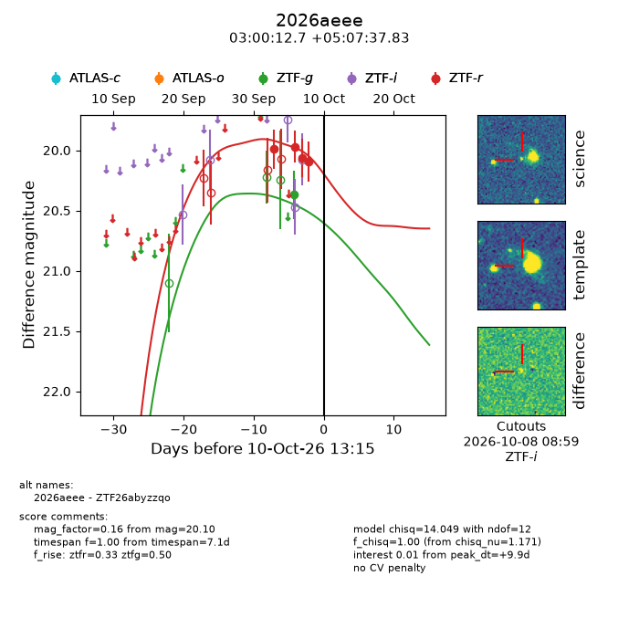
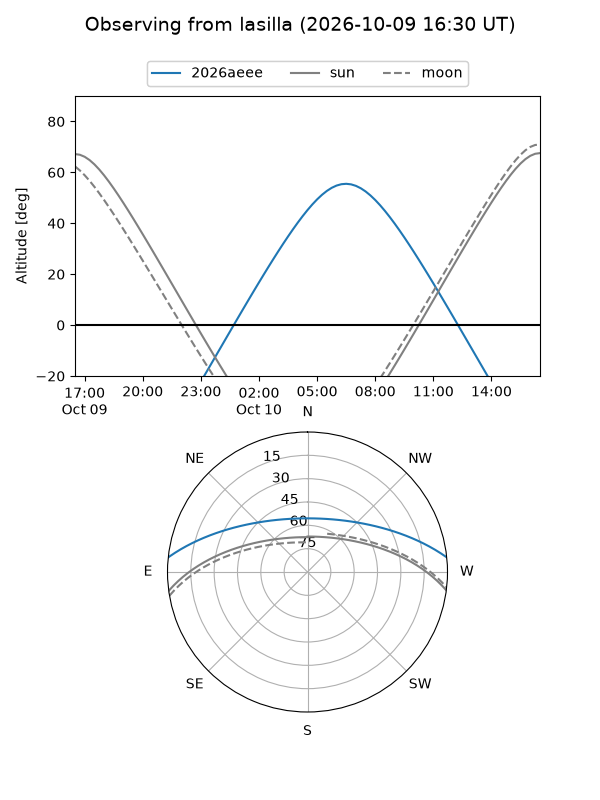
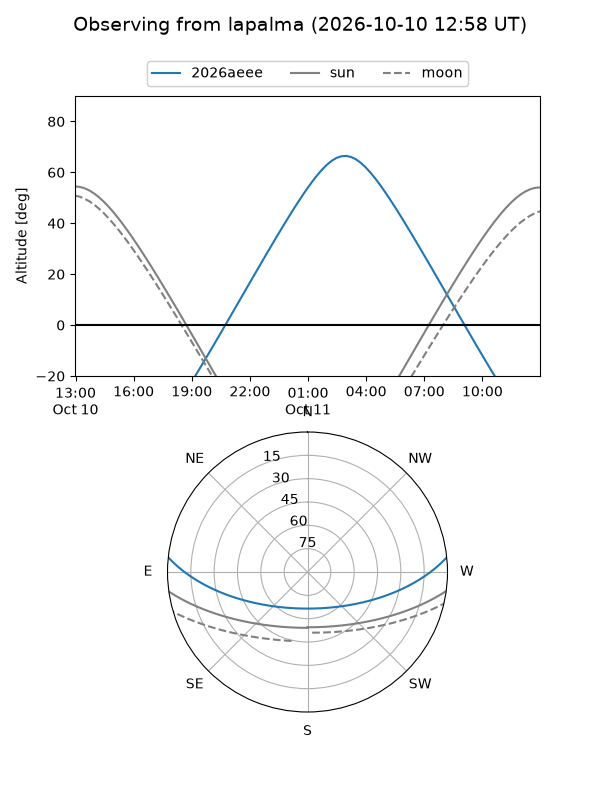
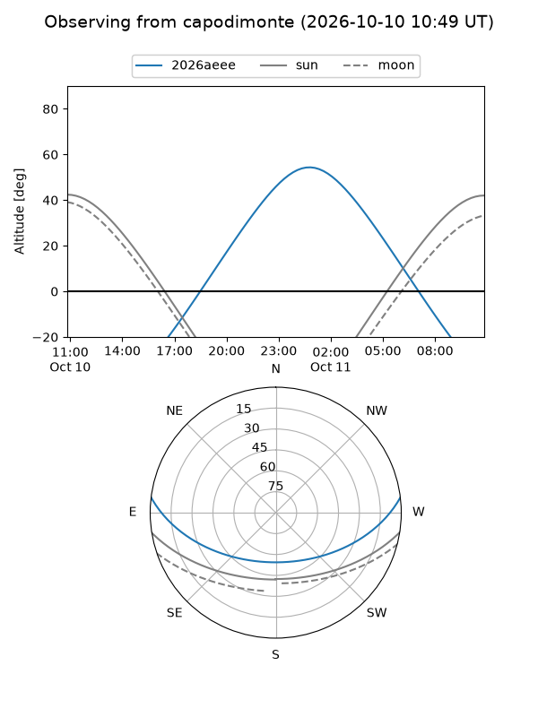
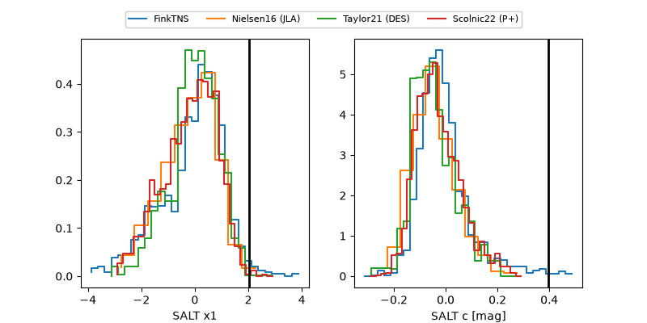

2026aeee
Target 2026aeee at 2026-10-10 13:16
Aliases and brokers:
FINK-ZTF: ztf.fink-portal.org/ZTF26abyzzqo
Lasair-ZTF: lasair-ztf.lsst.ac.uk/objects/ZTF26abyzzqo
ALeRCE-ZTF: alerce.online/object/ZTF26abyzzqo
YSE-PZ: ziggy.ucolick.org/yse/transient_detail/2026aeee
TNS name: wis-tns.org/object/2026aeee
Direct TNS query: direct search
alt names
ZTF26abyzzqo (ztf,fink_ztf)
2026aeee (tns,yse)
Coordinates:
equatorial (ra, dec) = 45.0531,+5.12718
equatorial (HMS+DMS) = 03:00:12.75,+05:07:37.83
galactic (l, b) = (171.7736,-45.18540)
Flags:
peak dt: +9.9
Photometry:
last ztfg=20.37, ztfr=20.10
1 ztfg, 4 ztfr detections
Lightcurve

Visibility



Additional plots
